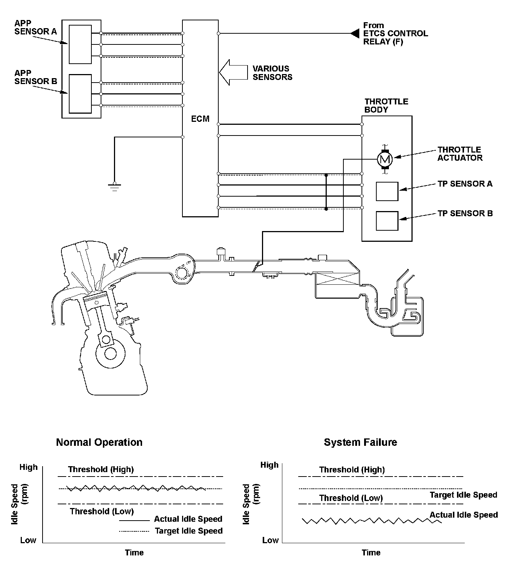
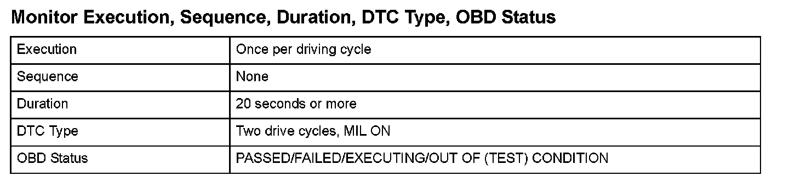
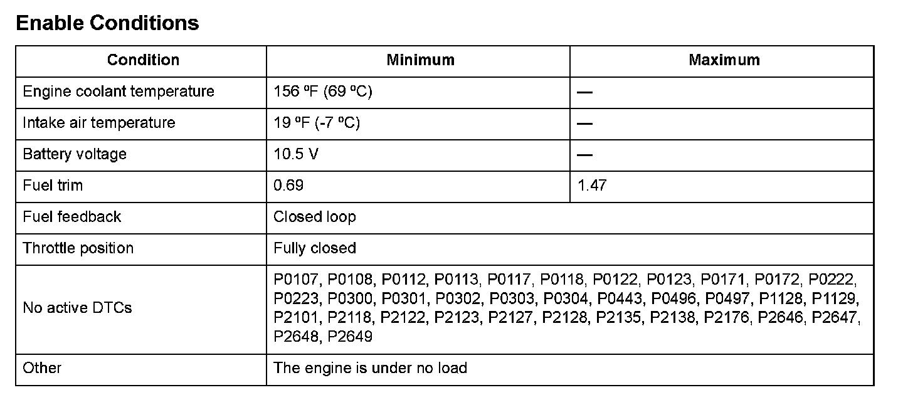

Advanced Diagnostics
DTC P0506: Idle Control System RPM Lower Than Expected (Engine Type: K20Z3)
General Description
A target idle speed that meets the engine operating conditions (coolant temperature, A/C ON or OFF, etc.) is stored in the engine control module (ECM). The ECM monitors and controls the idle speed so that the actual idle speed is equal to the target idle speed. If the actual idle speed varies beyond a specified value from the target speed over a certain period of time, the ECM detects a malfunction in the idle speed control system and a DTC is stored.

Monitor Execution, Sequence, Duration, DTC Type, OBD Status

Enable Conditions
Malfunction Threshold
The actual idle speed is at least 100 rpm less than the target idle speed for at least 20 seconds.
Driving Pattern
1. Start the engine. Hold the engine speed at 3,000 rpm without load (in neutral) until the radiator fan comes on.
2. Let the engine idle for at least 20 seconds.
Diagnosis Details
Conditions for illuminating the MIL
When a malfunction is detected during the first drive cycle, a Temporary DTC is stored in the ECM memory. If the malfunction recurs during the next (second) drive cycle, the MIL comes on and the DTC and the freeze frame data are stored.
Conditions for clearing the MIL
The MIL will be cleared if the malfunction does not recur during three consecutive trips in which the diagnostic runs.
The MIL, the DTC, the Temporary DTC, and the freeze frame data can be cleared by using the scan tool Clear command or by disconnecting the battery.